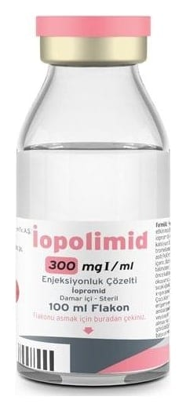

İopolimid 300 mgi/ml Enjeksiyonluk Çözelti, 100 ml

Ne için kullanılır
KT · Bölüm 1• İOPOLİMİD 300, 1 mililitrede 623 mg iopromid içerir. • İOPOLİMİD enjeksiyonluk çözelti, vücudun belirli bölümlerinin X-ışınlarıyla görünür hale gelebilmesi için enjekte edilen iopromid adlı etkin maddeyi içerir. İOPOLİMİD’in etkin maddesi olan iopromid, iyotlu X ışınına kontrast maddeler sınıfınaaittir ve içerisinde bulunan iyot sayesinde röntgen ışınlarını zayıflatır. • İOPOLİMİD 300, 50 ve 100 mililitrelik renksiz cam şişelerde bulunur. Şişenin içerisindeki çözelti berraktır ve parçacık içermez. • İOPOLİMİD, tanı amaçlı kullanılır. Çekilen filmlerde (Bilgisayarlı tomografide (BT), arteriyografi (atardamarların görüntülenmesi) ve venografide (toplardamarların görüntülenmesi), intravenöz/intraarteriyel dijital subtraksiyon anjiyografisinde (DSA) (toplardamar içi/atardamar içi DSA), intravenöz ürografide (toplardamar içi uygulama sonrası üriner sistem görüntülenmesi), ERKP’de (endoskopik retrogradkolanjiyopankreatografi (safra yolları ve pankreas görüntülenmesini sağlayan girişimsel bir yöntem)), artrografi (eklemlerin görüntülenmesi) ve diğer vücut boşluklarının tetkikinde) görüntüyü belirginleştirmek için kullanılır. Kontrastlı
mamografi (CEM) (memenin görüntülenmesi) bilinen veya şüphelenilen meme lezyonlarını değerlendirmek ve teşhis etmek amacıyla kullanılır. İOPOLİMİD, intratekal (ilacı doğrudan merkezi sinir sistemine iletmek üzere, iğnenin omurilik çevresindeki bölgeye uygulanması şeklinde) kullanılmaz.